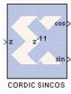

|
|
The Xilinx CORDIC SINCOS reference block implements Sine and Cosine generator circuit using a fully parallel CORDIC (COordinate Rotation DIgital Computer) algorithm in Circular Rotation mode.That is, given input angle z, it computes the output cosine (z) and sine (z). The CORDIC processor is implemented using building blocks from the Xilinx blockset. The CORDIC sine cosine algorithm is implemented in the following 3 steps:
sin (z ) = sin(t).cos(pi/2) + cos(t).sin(pi/2) = cos(t)
cos (z ) = cos(t).cos(pi/2) - sin(t).sin(pi/2) = -sin(t)
For z < pi/2: using z = t - pi/2, then
sin (z ) = sin(t).cos(-pi/2) + cos(t).sin(-pi/2) = -cos(t)
cos (z ) = cos(t).cos(-pi/2) - sin(t).sin(-pi/2) = sin(t)